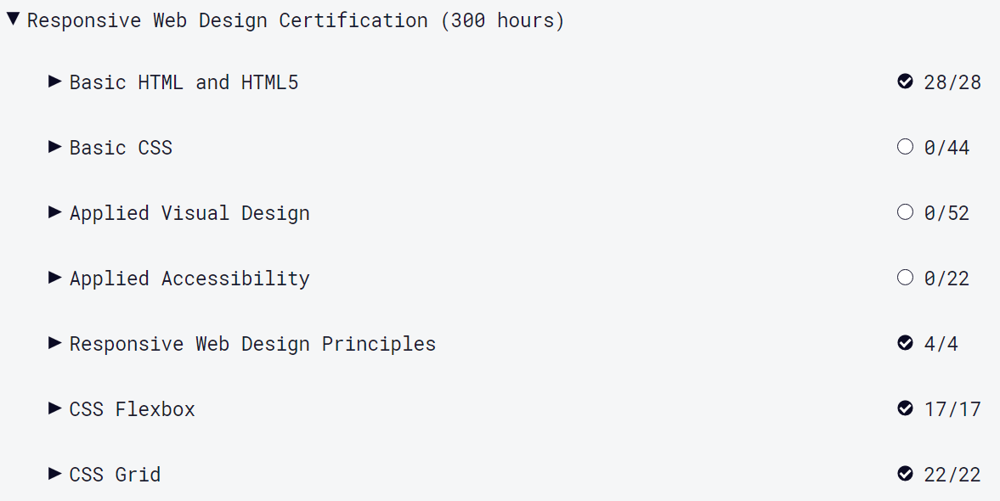

Voor mijn persoonlijke ontwikkeling had ik aan het begin van de minor een leerdoel opgesteld:
Tijdens deze minor wil ik mijn eigen stijl van opmaak ontdekken. Dit zal waarschijnlijk ontwikkeld worden door gewoon het volgen van de minor aangezien dit onder de leerdoelen ervan viel.
Iets waar ik wel aan kan werken zijn mijn HTML en CSS skills. Ik ben nooit goed geweest met het gebruik van HTML en CSS, ik had internetstandaarden ook net aan met een 6 gehaald. Ik heb er niet veel interesse voor, maar ik wil het wel beter onder de knie hebben. Dit zal mij vooral voor later een voordeel geven als ik weet hoe alles precies in elkaar zit, dan heb ik een breder beeld tijdens het ontwerpen en werken met mijn team.
Wat ik eraan wil doen dit semester is oefenen met codecademy, zoals de link die wij gekregen hadden tijdens de kick-off. Tijdens project web in de 2de hebben wij extra oefeningen en uitleg gekregen over het gebruik van moeilijkere onderdelen, zoals het toepassen van een grid op je website en hoe je het responsive kan maken. Deze extra uitleg heeft mij erg geholpen en ervoor gezorgd dat ik dat onderdeel in 1 keer had gehaald. Ik geloof dat als ik blijf oefenen, het mij een stuk sneller af zal gaan.
Ook wil ik de resultaten van deze minor verwerken in een zelfgemaakte website in plaats van deze alleen te plaatsen in mijn adobe portfolio. Zo geef ik mijzelf een extra uitdaging om te oefenen met wat ik heb geleerd tijdens het semester.
Ik heb uiteindelijk op de site Freecodeacademy oefeningen gedaan van html en css en daarbij vooral de onderdelen waar ik de meeste moeite mee had.
Bij de vakken webanimatie en webtypografie heb ik ook heel veel geoefend met voornamelijk css en dat heeft mij erg geholpen om in ieder geval daar meer verstand van te hebben. Daarom heb ik ook nouwelijks basis CSS gedaan aangezien ik dat al veel had geoefend met de vakken. Zoveel uren heb ik in die vakken gestoken, omdat ik dit onderdeel dus erg lastig vind. Daarom was het nu een hele grote uitdaging om mijn portfolio zelf te maken zonder template.
Ik ben erachter gekomen dat ik niet goed ben in websites maken en heb vooral moeite met het netjes weergeven van de content. Dit is niet de beste site, maar ik ben toch trots op mijzelf dat ik dit heb gedaan terwijl ik er een bloedhekel aan heb.